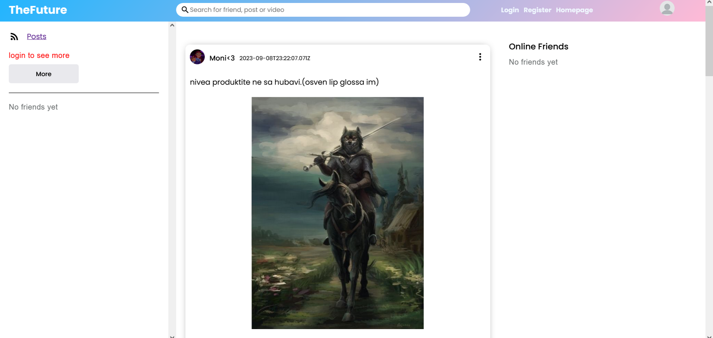
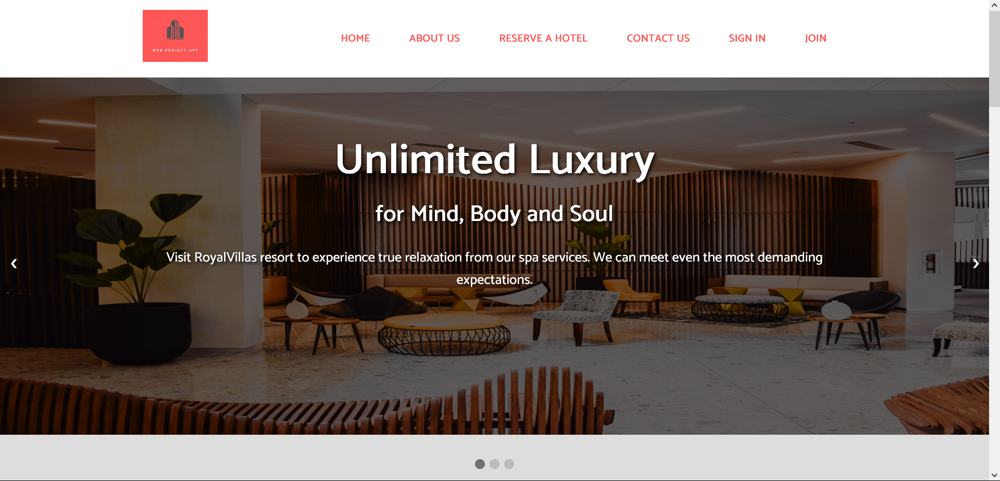

<article class="about-section py-5">
    <div class="container">
        <h2 class="title mb-3">About Me</h2>

        <p>Hello there! My name is <strong>Boyan</strong>, and I'm delighted to welcome you to my online development
            blog. At the
            age of 19, I'm a passionate Full-stack programmer with expertise in various technologies such as
            <strong>React,
                Express, Angular, TypeScript, Node.js, HTML, and CSS, C# and Python.</strong>
        </p>
        <H2>Career:</H2> <p><strong>Middle Front-End Developer and SAP Consultant at Roiable</strong> | <em>March 2024 - Present (10 months)</em></p> <ul> <li>Worked as a middle front-end developer, utilizing React.js, JavaScript, HTML5, and CSS3 to create responsive and dynamic user interfaces for web applications.</li> <li>Collaborated with back-end developers to integrate SAP systems, customizing solutions to meet client business needs.</li> <li>Provided SAP consultation, focusing on system optimization and enhancing workflows for clients.</li> <li>Ensured front-end code quality by following best practices, maintaining an efficient and scalable codebase.</li> <li>Contributed to Agile development cycles, delivering high-quality features and improvements in a collaborative, hybrid work environment.</li> </ul> <p><strong>Intern and Junior Software Developer at Software University (SoftUni)</strong> | <em>June 2023 - March 2024 (10 months)</em></p> <ul> <li>Gained hands-on experience as an intern and junior developer, focusing on front-end technologies such as React, JavaScript, HTML, and CSS.</li> <li>Developed, tested, and maintained web applications, applying modern front-end development practices and tools.</li> <li>Collaborated with instructors and peers on projects, improving coding skills and learning best practices for software development and debugging.</li> <li>Contributed to the development of user interfaces, focusing on usability and responsiveness.</li> <li>Learned the fundamentals of Agile development and version control, preparing for full-time software development roles.</li> </ul>
        <h2>Projects:</h2>
        <p><strong>Process Builder for IAM (Intelligent Access Management) System - Coca-Cola North America (CONA)</strong></p>
        <ul>
          <li>Developed the **Process Builder** as part of the **IAM System**, enabling users to automate and manage access control workflows.</li>
          <li>Collaborated with UX/UI teams to design an intuitive interface, allowing users to visually create and modify access workflows.</li>
          <li>Implemented interactive components using React.js and JavaScript, enhancing the user experience in managing complex access scenarios.</li>
        </ul>
        
        <p><strong>Mapping Builder for IAM System - Coca-Cola North America (CONA)</strong></p>
        <ul>
          <li>Designed and built the **Mapping Builder**, allowing users to map and visualize data across systems, roles, and permissions.</li>
          <li>Created a responsive, interactive interface in collaboration with UX/UI teams to simplify the process of managing data mappings.</li>
          <li>Utilized modern front-end technologies to ensure smooth performance and real-time data visualization for users handling access management tasks.</li>
        </ul>
        
        <p><strong>UI Development for IAM Homepage - Coca-Cola North America (CONA)</strong></p>
        <ul>
          <li>Developed the **homepage UI** for the IAM system, focusing on a visually appealing, responsive, and user-centric design that aligned with Coca-Cola’s branding.</li>
          <li>Optimized for both desktop and mobile devices, ensuring fast load times and high performance across all platforms.</li>
          <li>Collaborated with designers to deliver a clean, modern interface, improving user engagement and satisfaction with the IAM system.</li>
        </ul>
        
        <p><strong>UI Enhancements for IAM System - Coca-Cola North America (CONA)</strong></p>
        <ul>
          <li>Contributed to UI component development and enhancements for the IAM system, focusing on usability, accessibility, and consistency across platforms.</li>
          <li>Refined design and functionality to ensure smooth navigation and a more intuitive user interface for access management.</li>
        </ul>
        
        <p><strong>Homepage Development with Node.js, Express.js, and TypeScript - Software University (SoftUni)</strong></p>
        <ul>
          <li>Developed various projects for SoftUni’s homepage, using **Node.js** and **Express.js** for building scalable server-side applications and efficient APIs.</li>
          <li>Integrated backend features with the front-end to ensure smooth data flow and user interaction on the homepage.</li>
          <li>Utilized **TypeScript** to improve code maintainability and ensure type safety, contributing to a more scalable codebase.</li>
        </ul>
        
        <p><strong>QA Automation with Playwright - Software University (SoftUni)</strong></p>
        <ul>
          <li>Performed automated testing for SoftUni’s projects using **Playwright**, ensuring cross-browser and device compatibility.</li>
          <li>Created and maintained end-to-end test scripts to validate key features of the homepage and other internal projects, contributing to higher code quality and reliability.</li>
          <li>Focused on building tests that captured real-world user scenarios, improving the overall quality assurance process.</li>
        </ul>
        <p>As a dedicated web developer, I find joy in crafting engaging and interactive user experiences through my
            coding skills. I'm particularly fascinated by the realms of software engineering and <b
                style="color: green;">AI</b>
            development, where I
            continuously seek opportunities to explore and contribute to the latest advancements.</p>
        <p>In addition to my web development pursuits, I'm also enthusiastic about game development. The prospect of
            creating immersive digital experiences and interactive worlds excites me, and I'm always looking for ways to
            merge my programming skills with my love for gaming.</p>
        <p>Beyond the world of coding, I find balance and enjoyment in various physical activities. Sports play a
            significant role in my life, especially fitness and basketball. Engaging in these activities not only keeps
            me physically active but also helps me maintain focus and drive in my development endeavors.</p>
        <p>Through this blog, I aim to share my knowledge, experiences, and insights gained from my journey as a web
            developer and software enthusiast. Join me as we explore the fascinating realm of technology and learn
            together.</p>
        <p>Thank you for visiting, and I hope you find my content inspiring and informative!</p>
        <figure></figure>
        <h5 class="mt-5">About The Blog</h5>
        <h1>Welcome to my web development blog</h1>
        <p>This blog is dedicated to <strong>helping intern programmers and enthusiasts</strong> like yourself by
            providing valuable resources and updates.</p>
        <p>As the <strong>sole developer</strong> behind this blog, I understand the importance of a <strong>supportive
                community</strong> and a platform to share knowledge. Through my articles, I aim to offer
            <strong>guidance and inspiration</strong> for individuals at all stages of their programming journey.</p>
        <p>You can expect a wide range of content on this blog. I will <strong>showcase my personal projects</strong>,
            discussing the challenges faced and the solutions implemented. Additionally, I will provide
            <strong>tutorials and step-by-step guides</strong> on various programming concepts, breaking them down into
            <strong>easy-to-understand explanations</strong> with practical examples.</p>
        <p>In addition to programming topics, I believe in the power of <strong>diverse perspectives</strong>.
            Occasionally, I will touch upon <strong>news and trends</strong> in the tech industry, highlighting
            inclusive practices and sharing insights on how we can create a more welcoming and diverse community.</p>
        <p>Whether you're seeking advice on a specific programming language, exploring the latest frameworks and tools,
            or looking for inspiration to fuel your own projects, this blog is here to <strong>support you</strong>. I
            encourage you to <strong>actively engage with the content</strong> by leaving comments, asking questions,
            and joining the conversation.</p>
        <div class="signature">
            <p>Thank you for joining me on this journey of learning and growth.</p>
            <em>- Boyan</em>
        </div>
        <a href="#" class="cta-button">Happy coding!</a>
        <h5 class="mt-5">My Skills and Experiences</h5>
        <p>During my programming journey, I have gained a diverse range of skills and experiences that have shaped me
            into a well-rounded developer. Currently, I am studying programming with JavaScript, React, Angular, and
            Express at SoftUni University. Additionally, I am constantly expanding my knowledge through self-study and
            learning from online resources.</p>
        <p>Over the past year and a half, I have dedicated myself to programming and have completed numerous projects
            that have helped me solidify my skills. I have worked on various types of projects, including video games,
            social networks, and a wide range of web applications and sites.</p>
        <p>Through these projects, I have gained hands-on experience in building interactive and dynamic web
            applications. I am proficient in JavaScript, utilizing its powerful features to develop functional and
            efficient code. With React and Angular, I have built modern and responsive user interfaces, leveraging their
            component-based architectures and powerful ecosystem of libraries.</p>
        <p>Furthermore, I have experience working with Express, a popular Node.js framework, to develop server-side
            applications and RESTful APIs. This has allowed me to create robust and scalable back-end solutions for my
            projects.</p>
        <p>My passion for programming drives me to continuously learn and stay up-to-date with the latest industry
            trends and best practices. I am always eager to take on new challenges and expand my skill set.</p>
        <p>Overall, my combined academic studies and self-taught experiences have provided me with a solid foundation in
            programming. I am confident in my abilities to tackle complex problems, collaborate effectively, and deliver
            high-quality solutions.</p>
        <p>I am excited to apply my skills and experiences to new projects and further enhance my capabilities as a
            developer.</p>
      <div class="side-projects">
    <h5 class="mt-5">Side Projects</h5>

    <div class="image-container">
        <figure>
            <a href="https://thefuture-eta.vercel.app/">
                
            </a>
        </figure>

        <figure>
            <a href="https://softuniadahotel.onrender.com/">
                
            </a>
        </figure>
        <!-- <figure>
            <a href="https://made4dev.com">
                
            </a>
        </figure> -->
        <!-- Add two more figures with similar structure for your other images -->
    </div>
</div>

    </div>
</article>
